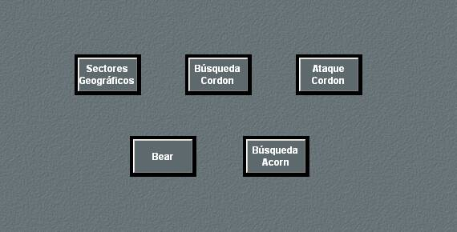
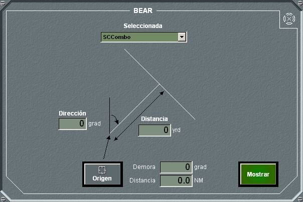

Este panel general de planes ASW permite seleccionar entre cinco tipos diferentes de planes, Sectores Geográficos, Búsqueda Cordon, Ataque Cordon, Bear y Búsqueda Bellota. Pulsando en cada botón se abre el panel de detalle correspondiente al tipo de plan seleccionado.
Sectores Geográficos
En el panel de detalle de plan Sectores Geográficos se pueden realizar las siguientes acciones:
- Seleccionar una unidad de la lista de unidades amigas (superficies y helicópteros) para asignarle el plan, aunque también es posible crear este plan sin seleccionar unidad.
- Para un plan determinado, introducir los datos correspondientes, según procedimiento, teniendo en cuenta lo siguiente:
- El origen del plan, se toma de la posición del Hook al pulsar el botón Origen, o se introduce manualmente, como una demora, distancia respecto a la unidad propia. Si el Hook se sitúa sobre una traza, al pulsar el botón Origen el plan se engancha a dicha traza.
- Se puede seleccionar el plan Sectores Geográficos Modificados, pulsando sobre el botón Circunferencia.
- La dirección se elige de una lista desplegable, por cuadrantes.
- Trazar el plan en la pantalla táctica, pulsando el botón Mostrar. En la pantalla táctica aparecerá un dibujo para el plan Sectores Geográficos, de acuerdo a los datos introducidos en el plan. Si el plan está enganchado a una traza, se mueve con ella.
Búsqueda Cordon
En el panel de detalle del plan de búsqueda Cordon se pueden realizar las siguientes acciones:
- Seleccionar una unidad de la lista de unidades amigas (superficies y helicópteros) para asignarle el plan, aunque también es posible crear este plan sin seleccionar unidad.
- Para un plan determinado, introducir los datos correspondientes, según procedimiento, teniendo en cuenta lo siguiente:
- El origen del plan, se toma de la posición del Hook al pulsar el botón Origen, o se introduce manualmente, como una demora, distancia respecto a la unidad propia. Si el Hook se sitúa sobre una traza, al pulsar el botón Origen el plan se engancha a dicha traza.
- Trazar el plan en la pantalla táctica, pulsando el botón Mostrar. En la pantalla táctica aparecerá un dibujo para el plan de búsqueda Cordon, de acuerdo a los datos introducidos en el plan. Si el plan está enganchado a una traza, se mueve con ella.
Ataque Cordon
En el panel de detalle del plan de ataque Cordon se pueden realizar las siguientes acciones:
- Seleccionar una unidad de la lista de unidades amigas (superficies y helicópteros) para asignarle el plan, aunque también es posible crear este plan sin seleccionar unidad.
- Para un plan determinado, introducir los datos correspondientes, según procedimiento, teniendo en cuenta lo siguiente:
- El origen del plan, se toma de la posición del Hook al pulsar el botón Origen, o se introduce manualmente, como una demora, distancia respecto a la unidad propia. Si el Hook se sitúa sobre una traza, al pulsar el botón Origen el plan se engancha a dicha traza.
- Trazar el plan en la pantalla táctica, pulsando el botón Mostrar. En la pantalla táctica aparecerá un dibujo para el plan de ataque Cordon, de acuerdo a los datos introducidos en el plan. Si el plan está enganchado a una traza, se mueve con ella.
Plan Bear

En el panel de detalle del plan Bear se pueden realizar las siguientes acciones:
- Seleccionar una unidad de la lista de unidades amigas (superficies y helicópteros) para asignarle el plan, aunque también es posible crear este plan sin seleccionar unidad.
- Para un plan determinado, introducir los datos correspondientes, según procedimiento, teniendo en cuenta lo siguiente:
- El origen del plan, se toma de la posición del Hook al pulsar el botón Origen, o se introduce manualmente, como una demora, distancia respecto a la unidad propia. Si el Hook se sitúa sobre una traza, al pulsar el botón Origen el plan se engancha a dicha traza.
- Trazar el plan en la pantalla táctica, pulsando el botón Mostrar. En la pantalla táctica aparecerá un dibujo para el plan Bear, de acuerdo a los datos introducidos en el plan. Si el plan está enganchado a una traza, se mueve con ella.
Búsqueda Bellota
En el panel de detalle del plan de búsqueda Bellota se pueden realizar las siguientes acciones:
- Seleccionar una unidad de la lista de unidades amigas (superficies y helicópteros) para asignarle el plan, aunque también es posible crear este plan sin seleccionar unidad.
- Para un plan determinado, introducir los datos correspondientes, según procedimiento, teniendo en cuenta lo siguiente:
- El origen del plan, se toma de la posición del Hook al pulsar el botón Origen, o se introduce manualmente, como una demora, distancia respecto a la unidad propia. Si el Hook se sitúa sobre una traza, al pulsar el botón Origen el plan se engancha a dicha traza.
- Trazar el plan en la pantalla táctica, pulsando el botón Mostrar. En la pantalla táctica aparecerá un dibujo para el plan de búsqueda Bellota, de acuerdo a los datos introducidos en el plan. Si el plan está enganchado a una traza, se mueve con ella.